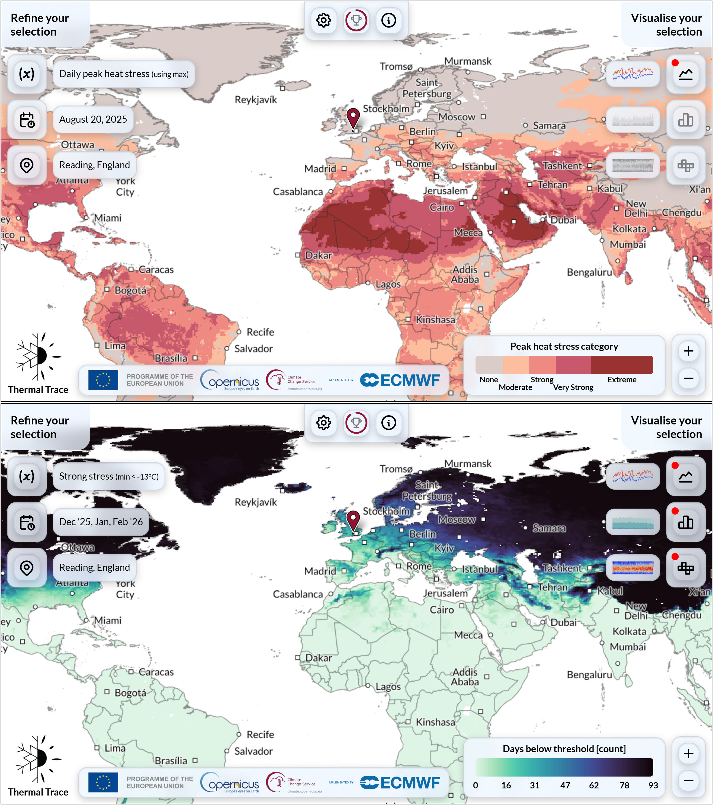
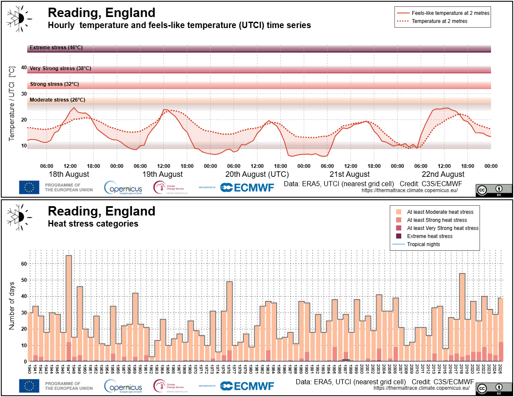
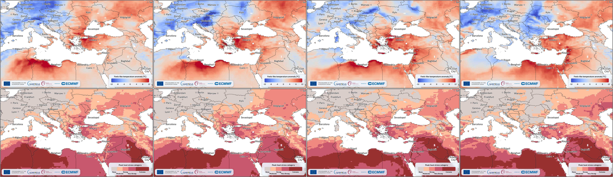
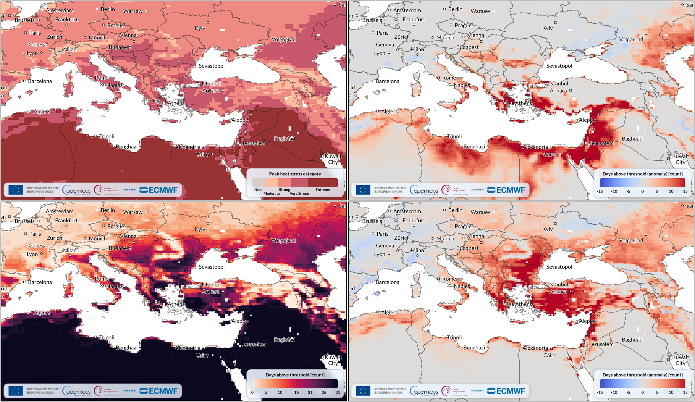
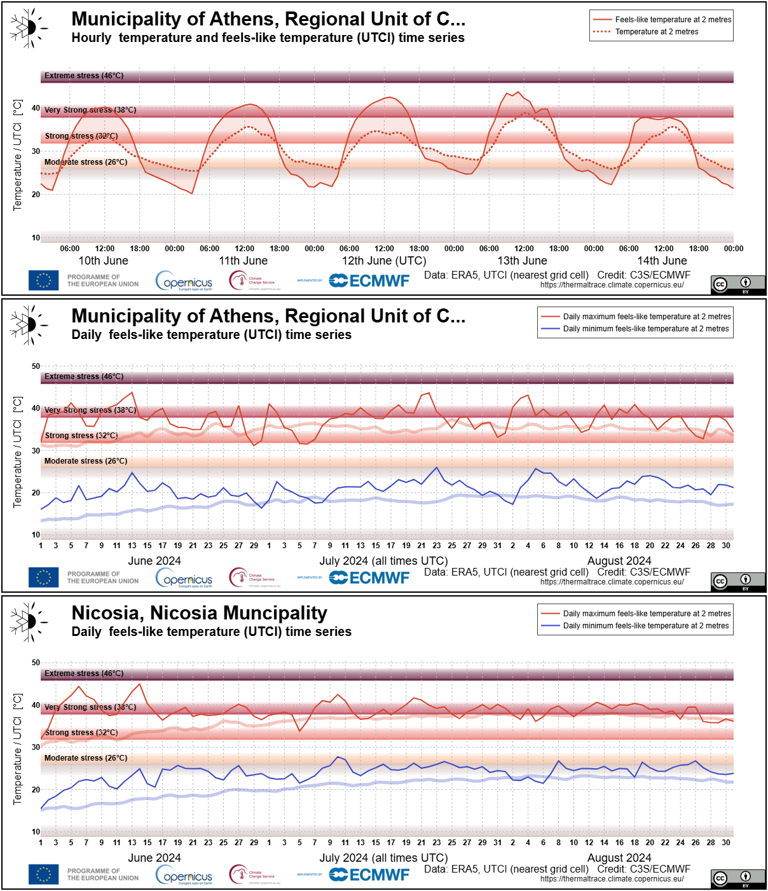
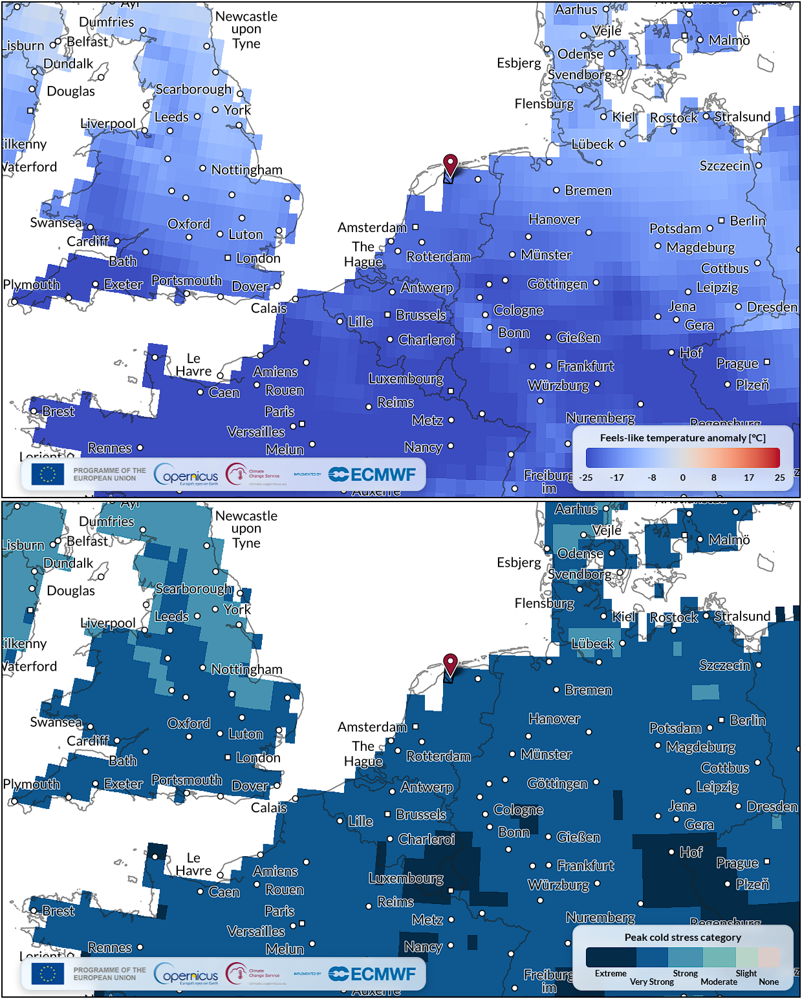
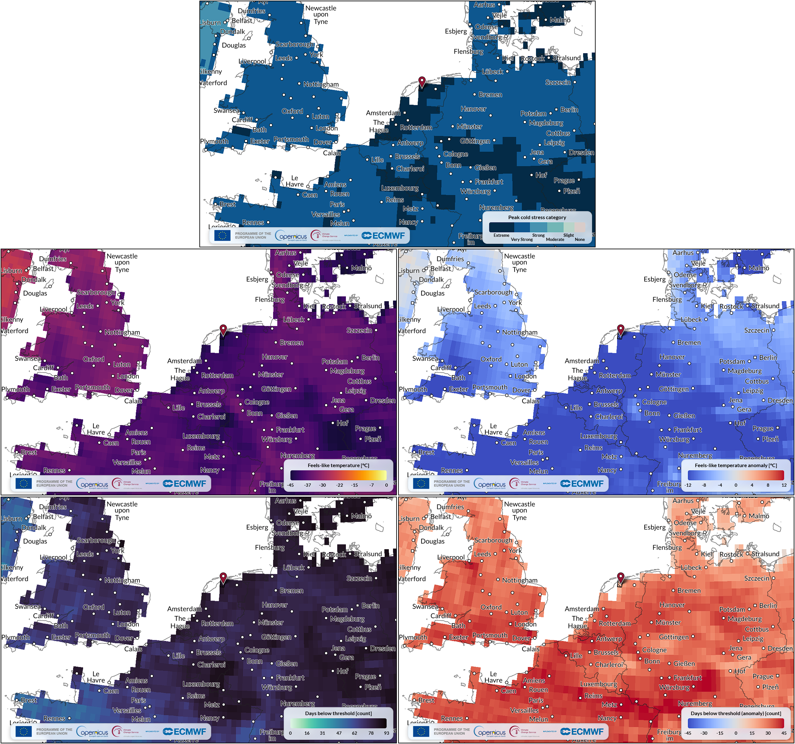
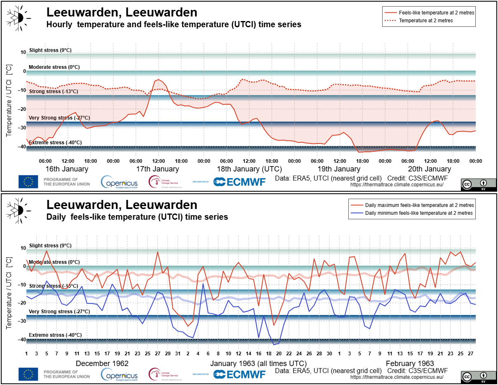
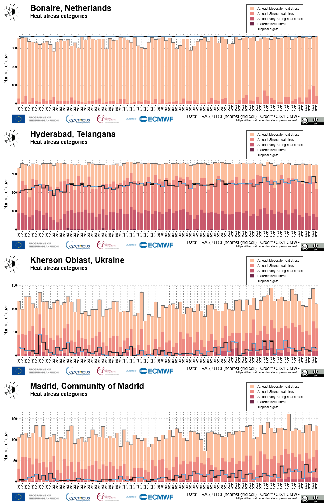
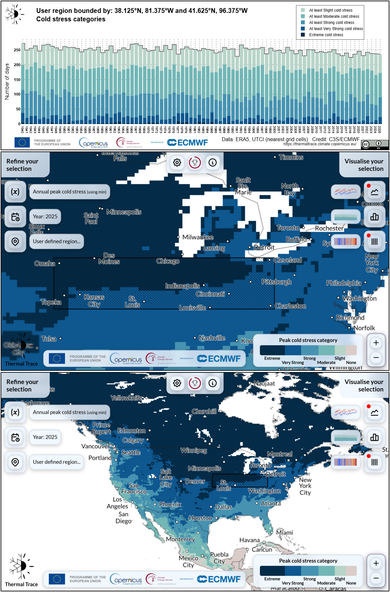

8.3. Visualisation of heat and cold stress with Thermal Trace#
Production date: 2026-06-15.
Produced by: Olivier Burggraaff (National Physical Laboratory).
🌍 Use case: Visualising heat and cold stress during extreme events (heatwaves, cold snaps) and long-term trends#
❓ Quality assessment question#
Is the Thermal Trace application an appropriate tool for broad audiences to visualise heat and cold stress relating to extreme temperature events, including heatwaves and cold snaps?
Is the Thermal Trace application an appropriate tool for broad audiences to visualise long-term trends in heat and cold stress, such as those relating to climate change?
Heat stress and cold stress occur when the human body faces extreme temperatures outside its comfort zone. These thermal extremes cause widespread, severe impacts on human health, society, and regional economies [Bell+18]. Specifically, global data show that cold temperatures cause about 4 594 000 deaths annually, while extreme heat contributes to another 489 000 deaths [Zhao+21]. As climate change accelerates, these dangerous meteorological events are growing increasingly frequent and intense. Consequently, there is greater desire for decision-makers, urban planners, and the general public to be able to visualise and track heat and cold stress-health trends over time, to understand and plan for their widespread impacts on human health, society, and the economy.
The Thermal Trace application provides near real-time visualisations of heat and cold stress indicators as well as daily minimum/maximum feels-like temperature based on the ERA5 reanalysis [Menary+25]. The application is focused on the human experience of temperature and weather rather than solely the physical air temperature. For physical surface air and sea surface temperatures, users may want to use the Climate Pulse application, for which there is an equivalent quality assessment investigating its suitability for visualising extreme weather events.
Feels-like temperature (or apparent temperature) expresses how humans experience temperature by including additional variables relating to vapour pressure, wind speed, and irradiation [Steadman+84].
The Universal Thermal Climate Index (UTCI) is an international standard feels-like temperature indicator that quantifies the thermal stress experienced by a representative human in given meteorological circumstances. UTCI is expressed quantitatively as an equivalent temperature (in K or °C) which acts as a feels-like temperature – e.g. a UTCI of 30 °C under any circumstances causes stress equivalent to an air temperature of 30 °C under standard circumstances [Jendritzky+12, Błażejczyk+10]. It is important to note that UTCI assumes an “average person” [Fiala+12] wearing clothing typical for given weather conditions [Havenith+12] and may be less representative especially for vulnerable groups, such as children, the elderly, and people with reduced thermoregulation [Tousi+24].
This assessment examines the suitability of the Thermal Trace application for visualising heat and cold stress, both during extreme events like heatwaves and cold snaps and over longer periods of time, for a broad (scientific and non-scientific) audience.
📢 Quality assessment statement#
These are the key outcomes of this assessment
The Thermal Trace application is a scientifically sound and convenient tool for visualising feels-like temperature (UTCI) and thermal stress indicators. Its visuals can be used directly (via screenshot or image export) or it can be used as a jumping-off point for data download and quantitative analysis or custom visualisation.
Thermal Trace is suitable for visualising extreme events, like heatwaves and cold snaps, both recently and decades in the past. Its daily to yearly maps and hourly to yearly time series provide sufficient coverage and resolution to see the spatial extent and temporal evolution of an event. When using the application, it is important to note the known biases and uncertainties in the underpinning ERA5 data, particularly pre-1979 and in areas where ERA5 has fewer input observations.
Thermal Trace is suitable for visualising long-term trends in thermal stress, reproducing known trends in different locations. Its yearly summary statistics time series are particularly useful for visualising the number of days with certain heat/cold stress levels and tropical nights, important variables for health and climate policy. Users should be aware of known biases and temporal inconsistencies in ERA5.
📋 Methodology#
Thermal Trace is an interactive application designed for a broad audience to visualise global feels-like temperature and UTCI. It displays daily, monthly, seasonal, and yearly maps along with time series, yearly statistics, and climate stripes (Figures 8.3.1–8.3.2).
Thermal Trace is based on the Thermal comfort indices derived from ERA5 reanalysis (derived-utci-historical; ERA5-HEAT) dataset [Di Napoli+21a], which is derived from the ERA5 reanalysis [Hersbach+20]. Data are available from 1940 up to near real-time (typical delay of about two days), including preliminary data from ERA5T, on a regular 0.25° × 0.25° grid, approximately 30 km × 30 km. For some variables, data can be displayed not only as absolute values but also as anomalies relative to the 1991–2020 average, the standard reference period used by the World Meteorological Organization (WMO).
Within the map and time series views, UTCI values are displayed both quantitatively and categorically. The stress categories and colours used in Thermal Trace are as follows [Di Napoli+19]:
| Stress category | UTCI range [°C] |
|---|---|
| Extreme cold stress | Lower than –40 |
| Very strong cold stress | –40 to –27 |
| Strong cold stress | –27 to –13 |
| Moderate cold stress | –13 to 0 |
| Slight cold stress | 0 to 9 |
| None | 9 to 26 |
| Moderate heat stress | 26 to 32 |
| Strong heat stress | 32 to 38 |
| Very strong heat stress | 38 to 46 |
| Extreme heat stress | Higher than 46 |
Outputs from Thermal Trace can be exported in four ways:
Screenshot of the map view (Figure 8.3.1)
Time series exports (Figure 8.3.2)
Time series data download
Linking directly to a specific view in the application by copying the current URL, e.g. daily peak heat stress in Reading, UK, on 20 August 2025.
It is not possible to export the map view or download the corresponding data (global for one time stamp) directly from Thermal Trace. Instead, this can be done from the ERA5-HEAT CDS catalogue entry.

Fig. 8.3.1 Example screenshots of the Thermal Trace map view, from top to bottom:
a) Daily peak heat stress on 20 August 2025, centered on Reading, UK (app view).
b) Number of days with at least strong cold stress in December 2025–February 2026, centered on Reading, UK (app view).#

Fig. 8.3.2 Example time series exports from the Thermal Trace, from top to bottom:
a) Hourly temperature and UTCI (feels-like temperature) with heat stress categories on 18–22 August 2025, in Reading, UK (app view).
b) Yearly number of days with a given heat stress level, and yearly number of tropical nights, in Reading, UK (app view).#
Applications are quality assessed separately from their underpinning datasets. For information on quality attributes of the underlying datasets, the reader is referred to the quality assessment of the datasets, which can be found in their respective CDS catalogue entries or on the EQC hub.
The analysis and results are organised in the following use cases, which are detailed in the sections below:
Introduction
Assessment of Thermal Trace
Example: Southeastern Europe June 2024 Heatwave
Example: Northwestern Europe January 1963 Cold snap
Introduction
Assessment of Thermal Trace
Examples
📈 Analysis and results#
This quality assessment evaluates the suitability of Thermal Trace for use by broad audiences to visualise heat and cold stress, both long-term trends and specific extreme events (heatwaves and cold snaps). Thermal Trace was assessed based on the availability of relevant data variables, granularity of the data, spatial and temporal coverage and resolution, and the timeliness of data updates. The assessment is illustrated with practical examples of how these events and trends appear in Thermal Trace in real-world scenarios.
1. Extreme events#
Introduction#
There is no universal definition of a heatwave, with different organisations and countries having established their own criteria. However, we can generally define them as a period of time, from a few days up to a few weeks, of temperatures significantly higher than the normal range for that location at that time of year [Lhotka+22, Stefanon+12]. For example, the European State of the Climate 2023 used the definition “a period of at least three consecutive days when both the daily surface air temperature minima and maxima are higher than the highest 5% of values for the day in question during the 1991–2020 reference period”. Analogously, we can define cold snaps (also known as cold waves, cold spells, and cold air outbreaks) as a period of time with temperatures significantly lower than typical.
Due to their significant economic and health impacts, as described above, these extreme events often generate significant news coverage. For example, the February–March 2018 cold snap in the UK and Ireland was widely reported on in the popular press under the nickname “Beast from the East”, including real-time reporting of its death toll and economic damages [Morris+18]. The June 2024 Eastern Mediterranean heatwave led to similar real-time reporting of its increasing death toll, as well as journalistic investigations into the overall impact and the drivers of this extreme event [Bali+24, World Weather Attribution+24].
Assessment of Thermal Trace#
Thermal Trace is determined to be suitable for visualising the impacts of heatwaves and cold snaps, depending on the date and location of the event, for the following reasons:
Variables: Thermal Trace displays multiple useful variables for visualising and characterising extreme heat and cold events, most importantly hourly (time series) or daily (map) UTCI and the derived heat/cold stress categories, as well as the number of days with x stress category and tropical nights per month or season. Using the “display extra variables” option also provides stress indicators based on the opposite UTCI limit (i.e. minimum UTCI for heat, maximum for cold), which is useful for determining the amount of relief available, e.g. during a heatwave, are the nights cold enough for the body to rest? Note that Thermal Trace does not provide physical surface air temperatures, but users can view these in the Climate Pulse application, for which there is an equivalent quality assessment.
Spatial Coverage and Resolution: Thermal Trace provides global coverage (coverage over the oceans can be toggled in the options) at a resolution (0.25° × 0.25°) suitable for showing regional, national, and multi-country events. Time series are available at the individual grid cell level. The spatial grid is very clearly indicated within the application, e.g. when a specific location is selected. The spatial resolution may be a limiting factor in locations with varied terrain, such as coastlines and cities (ERA5 does not account for the urban heat island effect).
Temporal Coverage and Resolution: Data are available on an hourly to yearly basis, making it possible to characterise temperatures over the course of a heatwave or cold snap including daily variations (e.g. tropical nights), as well as comparisons to the rest of the year and the overall climatology of a site. Coverage extends back to 1940, providing a long record for comparison and enabling visualisation of historical events such as the 1963 European cold snap. Note that the accuracy and uncertainty of ERA5, the data underpinning this application, vary over time [Soci+24, Hersbach+20].
Timeliness: Data become available in Thermal Trace on a delay of a few days (typically ~5), based on the update schedule of the ERA5-HEAT dataset. This enables monitoring of an ongoing event in near real-time, but not true real-time. For real-time and near-future UTCI, users may be interested in ECMWF’s experimental UTCI forecast.
Uncertainty: Thermal Trace does not show uncertainty estimates, because these are not available for the underpinning dataset (ERA5-HEAT). A general estimate of uncertainty in the data cannot be provided here, but users can refer to the relevant documentation and scientific literature for ERA5 [Soci+24, Simmons+21, Hersbach+20] to determine the confidence in specific times and locations. Overall, the data are most trustworthy after 1979 (the satellite era), and in locations with more observations (Europe and United States) before then.
Example: Southeastern Europe June 2024 Heatwave#
Between 3 and 27 June 2024, several countries in Southeastern Europe and part of the Middle East were affected by a heatwave, with the most extreme temperatures occurring between 11 and 14 June [Dafis+24].
In Thermal Trace, this heatwave is clearly visible in the daily maximum UTCI anomaly, with UTCI values over 10 °C warmer than usual, and peak heat stress (Figure 8.3.3). These daily figures also show a clear progression from west to east over time, particularly in North Africa. Over the whole month of June 2024, most of the region experienced strong or very strong (Southeastern Europe and Türkiye) or extreme (North Africa and Middle East) heat stress at least once (Figure 8.3.4). The number of days with at least strong heat stress (max UTCI over 32 °C) and tropical nights (min UTCI over 20 °C) in June 2024 was much (>15 days) higher than normal. Tropical nights are particularly impactful to human health as they prevent the body from recovering after a hot day [Royé+21].
In addition to the map view, the time series exports can be used to monitor the progression of the heatwave in a particular location or a custom area. For example, the exported time series in Figure 8.3.5 clearly display the daily cycle of temperature with 12 hours of strong to very strong heat stress in Athens, Greece during the peak of the heatwave. The seasonal timeseries in Figure 8.3.5 show that June 2024 was exceptionally warm in this region compared to the typical climatology, particularly in Cyprus where the rest of the summer season followed the normal patterns more closely. While humans can adapt physically and behaviourally to a gradual seasonal rise in temperature, an intense heatwave like in June 2024 can increase heat stress levels much faster than usual (e.g. very strong heat stress in early June when one would expect only moderate), overwhelming this ability and posing serious health risks [Di Napoli+21b].

Fig. 8.3.3 Screenshots of Thermal Trace showing:
a) Anomaly in daily maximum UTCI (top; app view).
b) Daily peak heat stress category (bottom; app view).
over the 11 to 14 (left to right) June 2024 peak heatwave period.
This figure is comparable to Figure 8.1.9 in the quality assessment for Climate Pulse.#

Fig. 8.3.4 Screenshots of Thermal Trace showing:
a) Monthly peak heat stress category (top left; app view).
b) Anomaly in number of tropical nights (top right; app view).
c) Number of days with at least strong heat stress (bottom left; app view).
d) Anomaly in days with at least strong heat stress (bottom right; app view).
over all of June 2024.#

Fig. 8.3.5 Time series, from top to bottom:
a) Hourly temperature (dashed) and UTCI (solid) in Athens, Greece during the peak of the 2024 heatwave (app view).
b) Daily minimum/maximum (blue/red) UTCI over the 2024 summer season (June–August; solid) and average climatology (1991–2020; transparent)
in Athens, Greece (app view).
c) Same as b), in Nicosia, Cyprus (app view).#
Example: Northwestern Europe January 1963 Cold snap#
The winter of 1963 was one of the coldest in European history, setting records in Germany (6.3 °C colder than the 1981–2010 average), the UK (coldest winter since 1740 in central England), and much of the rest of Europe [Sippel+24, Twardosz+16, Prior+11]. In the Netherlands, the national meteorological office KNMI defines a cold snap as a sequence of at least five days with a maximum temperature below 0.0 °C, of which at least three have a minimum temperature colder than –10.0 °C. Four such events were recorded in January 1963 alone [KNMI]. The 1963 edition of the Elfstedentocht, a nearly 200 km speed skating competition held irregularly in the Dutch province of Fryslân, has been nicknamed “The Hell of ‘63” due to the extremely harsh conditions faced by competitors. Only 127 out of 9 862 participants finished the race, with many dropping out due to frozen eyes and frostbite before the race was cancelled for safety concerns [De Friesche Elf Steden, Wielinga+24].
In Thermal Trace, the severe cold faced by Elfstedentocht participants on 18 January 1963 is clearly visible, with strong to extreme cold stress across much of northwestern Europe and UTCI values around 20 °C colder than usual in the entire Netherlands (Figure 8.3.6). Over the 1962–63 winter season, most of this part of Europe experienced strong or extreme cold stress at least once, with seasonal minimum UTCI values down to –45 °C, which is 10 to 15 °C colder than the typical seasonal minimum, and ≥70 days with strong cold stress (Figure 8.3.7).
The hourly time series illustrates the difference between UTCI and physical temperature very well (Figure 8.3.8). The air temperature at 2 m increased from 17 to 18 January but the UTCI fell sharply, corresponding to known conditions (severe wind chill and lack of sunlight) that day [De Friesche Elf Steden]. Since UTCI is calculated for an average human performing standard tasks, not someone speed skating 200 km, there may be some difference between UTCI and the participants’ actual experiences. For example, exercise creates more body heat and thus reduces cold stress, but high speed increases wind chill which worsens cold stress. Lastly, the seasonal time series in the same figure clearly shows the cold snap of 16–22 January as well as an earlier one around the turn of the year.
Uncertainty is particularly important to consider for case studies early in the ERA5 data record. Due to the limited number of observational data available for assimilation in the early years, particularly the absence of satellite data prior to 1979, the uncertainty in individual ERA5 data can be markedly larger than in later years. The accuracy may also be lower for the same reason. Both accuracy and uncertainty are strongly tied to data availability and hence vary strongly with time and location. For example, ERA5 is trustworthy over much of Europe and the United States as early as the 1940s, but not until several decades later in the Southern Hemisphere [Soci+24]. Since ERA5-HEAT, the dataset underpinning Thermal Trace, combines multiple ERA5 variables to determine UTCI, covariance between these variables may increase or decrease the resulting uncertainties. For a discussion on uncertainty in ERA5 and in UTCI, the reader is referred to [Soci+24, Di Napoli+21b, Hersbach+20, Schreier+13]. A general rule of thumb for using Thermal Trace would be to investigate the uncertainty in ERA5 for the preferred location and time, and to cross-reference with alternative data sources or descriptions of known events (such as heatwaves or cold snaps) for increased confidence.

Fig. 8.3.6 Screenshots of Thermal Trace showing:
a) Anomaly in daily minimum UTCI (top; app view).
b) Daily peak cold stress category (bottom; app view).
in Northwestern Europe on 18 January 1963, the day of the 1963 Elfstedentocht. The marker indicates Leeuwarden, where the race started and finished.
Note that this figure uses the LAEA (EPSG:3035) projection and that the colour scale is different from Figure 8.3.3.#

Fig. 8.3.7 Screenshots of Thermal Trace showing:
a) Seasonal peak cold stress (top; app view).
b) Seasonal minimum UTCI (centre left; app view).
c) Anomaly in seasonal minimum UTCI (centre right; app view).
d) Number of strong cold stress days (bottom left; app view).
e) Anomaly in strong cold stress days (bottom right; app view).
over the December 1962–February 1963 winter season.
Note that this figure uses the LAEA (EPSG:3035) projection.#

Fig. 8.3.8 Time series, from top to bottom:
a) Hourly temperature (dashed) and UTCI (solid) around the 18 January 1963 Elfstedentocht (app view).
b) Daily minimum/maximum (blue/red) UTCI over the 1962–63 winter season (December–February; solid) and average climatology (1991–2020; transparent) (app view).
in Leeuwarden, Netherlands.#
2. Long-term trends#
Introduction#
Climate change is causing a general increase in temperature across most (but not all) of the world, which naturally comes with increased heat stress and generally decreased cold stress [Vargas Zeppetello+22, Van Oldenborgh+19]. For example, in the Caribbean Netherlands, heat stress is increasingly becoming “unbearable”, and a recent report by health and climate experts urged the government to address this issue – for both Caribbean and European parts of the country – as a matter of priority for public health and the economy [Gezondheidsraad+26]. This general trend towards increased heat stress is compounded by an increase in the frequency and severity extreme events, both heatwaves and (in some locations) cold snaps [Thompson+22, Ma+19, Kundzewicz+16].
In popular media, the increase in heat stress has been a particularly common discussion topic relating to climate change. Explainer pieces on climate change have become a mainstay in journalism, with many published every summer and during heatwaves [Hassan+26, Overton+25, Rowlatt+23]. The same is true for heat health alerts, issued and reported on when temperatures (physical or feels-like) hit certain thresholds [Young+26]. The press also frequently report on projected outcomes of climate change, such as migration patterns likely to emerge from increased heat stress [Hall+26].
Thermal Trace does not provide future projections of UTCI, but can be used to explore historical trends up to the present. Many studies have looked into historical trends for different variables and locations and based on different datasets, e.g. UTCI across the Arabian Peninsula [Ullah+24] and tropical nights in Ukraine [Klok+23] and Spain [Correa+24]. In one study, Thermal Trace was used to assess the long-term (1940–2024) trend of UTCI and days with very strong/extreme heat stress in Oman [Hereher+26]. For future projections of temperature including daily thresholds, but not UTCI, the user is referred to the Copernicus Interactive Climate Atlas.
Assessment of Thermal Trace#
Thermal Trace is determined to be suitable for visualising long-term trends in heat and cold stress for the following reasons:
Variables: Thermal Trace displays multiple variables that address common questions in the scientific and popular literature, as well as in policymaking, particularly the number of heat/cold stress days per year and the number of tropical nights per year. For similar information based on physical (rather than feels-like) temperature, users may be interested in the ERA Explorer application.
Consistency: Temporal consistency is key for (long-term) trend analysis, as one needs to be confident that apparent trends are real, not artefacts of the data production. As such, this was a key goal in the production of ERA5 and its extension back to 1940, but the ability to ensure consistency is inherently limited by changes in availability of observations over time [Soci+24]. There are some known biases and patterns in ERA5, such as a cold bias over land before 1967 [Simmons+21], differences between the pre- and post-satellite (1979) eras [Liu+24, Lussana+24], and spatial differences in temporal consistency [Wang+25]. Keeping these caveats in mind, ERA5 and its derivative ERA5-HEAT can be reasonably used for long-term trend analysis, and hence Thermal Trace is suitable for visualisation of these trends.
Spatial Coverage and Resolution: Thermal Trace provides global coverage at a resolution (0.25° × 0.25°) suitable for investigating specific locations on the scale of counties. The ability to draw custom areas also enables larger-scale analysis, e.g. for a small country or wider region. The spatial resolution may be a limiting factor in locations with varied terrain, such as coastlines and cities (ERA5 does not account for the urban heat island effect). For example, the grid cell containing Bonaire, Netherlands (see example below) is mixed land-sea and its data therefore may not fully represent conditions on the island itself.
Temporal Coverage and Resolution: Time series are available at hourly, daily, and yearly (summary) resolution, allowing for trend analysis at different temporal scales. For long-term trend analysis, the yearly summary statistics are particularly useful.
Uncertainty: Thermal Trace does not show uncertainty estimates, because these are not available for the underpinning dataset (ERA5-HEAT). A general estimate of uncertainty in the data cannot be provided here, but users can refer to the relevant documentation and scientific literature for ERA5 [Soci+24, Simmons+21, Hersbach+20] to determine the confidence in specific times and locations. Overall, the data are most trustworthy after 1979 (the satellite era), and in locations with more observations (Europe and United States) before then.
Examples#
Thermal Trace allows the user to generate and export time series for a given grid cell, e.g. by searching for a particular town or clicking a location on the map, or a custom area drawn directly on the map. For long-term trends, this creates a stacked bar chart of yearly statistics, i.e. the number of days with x level of heat or cold stress per year. This chart can be used to visually identify trends. The displayed data can be exported in CSV format for quantitative analysis or custom visualisation. Here, we assess only Thermal Trace’s suitability for visualising trends within the application; the quality of the underpinning ERA5-HEAT dataset is assessed separately (see Indicators).
Visually comparing time series exported from Thermal Trace (Figure 8.3.9) to the literature shows general agreement. For example, the time series show an increase in very strong heat stress days in Bonaire, Caribbean Netherlands [Gezondheidsraad+26] and an increase in the number of tropical nights, as well as a potential increase in the number of heat stress days, in Madrid, Spain [Correa+24]. Kherson, Ukraine, also appears to show an increase in tropical nights and heat stress days [Klok+23], but this is more ambiguous in the time series. In Hyderabad, India, the number of tropical nights seems to have increased, but the number of heat stress days appears stable [Hassan+26]. Similarly, Thermal Trace shows a slight decline in cold stress days in recent years (Figure 8.3.10) in the Midwest region of the United States [Van Oldenborgh+19]. In each of these cases, Thermal Trace is a very useful tool for a first glance at the data, e.g. in a new location or timeframe, prior to a quantitative analysis.

Fig. 8.3.9 Time series exports showing yearly number of days with a given heat stress level, and yearly number of tropical nights, in (from top to bottom):
a) Bonaire, Caribbean Netherlands (app view). Note that this requires the ocean mask to be toggled off.
b) Hyderabad, India (app view).
c) Kherson, Ukraine (app view).
d) Madrid, Spain (app view).#

Fig. 8.3.10 Time series exports showing yearly number of days with a given cold stress level in a custom drawn region stretching from Charleston, West Virginia to Cleveland, Ohio (north) and Omaha, Nebraska (east), all in the United States. From top to bottom:
a) Time series.
b) Region shown on the map, zoomed in.
c) Region shown on the map, in the wider American context.
These figures can be reproduced by navigating to the same location
(app view)
and manually re-drawing the region.#
ℹ️ If you want to know more#
Key resources#
More about the ERA5 reanalysis and ERA5-HEAT dataset:
Related datasets on the CDS:
Climate extreme indices and heat stress indicators derived from CMIP6 global climate projections
Heat waves and cold spells in Europe derived from climate projections
More about feels-like temperature and UTCI:
More about cold snaps:
Could an extremely cold central European winter such as 1963 happen again despite climate change?
The UK winter of 2009/2010 compared with severe winters of the last 100 years
Where Do Cold Air Outbreaks Occur, and How Have They Changed Over Time?
More about heatwaves:
More about long-term trends in heat and cold stress:
More applications for visualising temperature and thermal comfort:
References#
[Bell+18] J. E. Bell et al., ‘Changes in extreme events and the potential impacts on human health’, Journal of the Air & Waste Management Association, vol. 68, no. 4, pp. 265–287, Apr. 2018, doi: 10.1080/10962247.2017.1401017.
[Błażejczyk+10] K. Błażejczyk et al., ‘Principles of the New Universal Thermal Climate Index (UTCI) and its Application to Bioclimatic Research in European Scale’, Miscellanea Geographica, vol. 14, no. 1, pp. 91–102, Dec. 2010, doi: 10.2478/mgrsd-2010-0009.
[Correa+24] J. Correa, P. Dorta, A. López-Díez, and J. Díaz-Pacheco, ‘Analysis of tropical nights in Spain (1970–2023): Minimum temperatures as an indicator of climate change’, International Journal of Climatology, vol. 44, no. 9, pp. 3006–3027, Jun. 2024, doi: 10.1002/joc.8510.
[De Friesche Elf Steden] De Friesche Elf Steden, ‘Tour of 1963: The Toughest Tour in the History of the Frisian Elfstedentocht’, Koninklijke Vereniging De Friesche Elf Steden. Accessed: May 18, 2026. [Online]. Available: https://elfstedentocht.frl/en/tour/the-tour-of-1963/
[Di Napoli+19] C. Di Napoli, F. Pappenberger, and H. L. Cloke, ‘Verification of Heat Stress Thresholds for a Health-Based Heat-Wave Definition’, Journal of Applied Meteorology and Climatology, vol. 58, no. 6, pp. 1177–1194, Jun. 2019, doi: 10.1175/JAMC-D-18-0246.1.
[Di Napoli+21a] C. Di Napoli, C. Barnard, C. Prudhomme, H. L. Cloke, and F. Pappenberger, ‘ERA5-HEAT: A global gridded historical dataset of human thermal comfort indices from climate reanalysis’, Geoscience Data Journal, vol. 8, no. 1, pp. 2–10, 2021, doi: 10.1002/gdj3.102.
[Di Napoli+21b] C. Di Napoli et al., ‘The Universal Thermal Climate Index as an Operational Forecasting Tool of Human Biometeorological Conditions in Europe’, in Applications of the Universal Thermal Climate Index UTCI in Biometeorology: Latest Developments and Case Studies, E. L. Krüger, Ed., Cham: Springer International Publishing, 2021, pp. 193–208. doi: 10.1007/978-3-030-76716-7_10.
[Fiala+12] G. Havenith et al., ‘The UTCI-clothing model’, International Journal of Biometeorology, vol. 56, no. 3, pp. 461–470, 2012, doi: 10.1007/s00484-011-0451-4.
[Gezondheidsraad+26] Gezondheidsraad and Wetenschappelijke Klimaatraad, ‘Climate change and health: Directions for policy’, Den Haag, Netherlands, 2026/05, WKR-advies 009, May 2026. [Online]. Available: https://www.healthcouncil.nl/documents/2026/05/21/climate-change-and-health-directions-for-policy
[Hall+26] B. Hall, ‘How lethal humidity threatens to displace millions in our region’, The Sydney Morning Herald, May 27, 2026. Accessed: May 27, 2026. [Online]. Available: https://www.smh.com.au/environment/climate-change/how-lethal-humidity-threatens-to-displace-millions-in-our-region-20260525-p600j0.html
[Hassan+26] A. Hassan, ‘“My head spins with the heat”: India’s gig workers battle exhaustion amid soaring temperatures’, The Guardian, May 26, 2026. Accessed: May 27, 2026. [Online]. Available: https://www.theguardian.com/world/2026/may/26/high-temperatures-millions-workers-impacted-by-heat-india-asia
[Havenith+12] D. Fiala, G. Havenith, P. Bröde, B. Kampmann, and G. Jendritzky, ‘UTCI-Fiala multi-node model of human heat transfer and temperature regulation’, International Journal of Biometeorology, vol. 56, no. 3, pp. 429–441, 2012, doi: 10.1007/s00484-011-0424-7.
[Hereher+26] M. E. Hereher, ‘Assessment of Seasonal Patterns of Apparent Heat Stress in Oman Using ERA5 Climatic Data’, Sustainability, vol. 18, no. 4, p. 1800, Feb. 2026, doi: 10.3390/su18041800.
[Hersbach+20] H. Hersbach et al., ‘The ERA5 global reanalysis’, Quarterly Journal of the Royal Meteorological Society, vol. 146, no. 730, pp. 1999–2049, Jul. 2020, doi: 10.1002/qj.3803.
[Jendritzky+12] G. Jendritzky, R. de Dear, and G. Havenith, ‘UTCI—Why another thermal index?’, International Journal of Biometeorology, vol. 56, no. 3, pp. 421–428, 2012, doi: 10.1007/s00484-011-0513-7.
[Klok+23] S. Klok, A. Kornus, O. Kornus, O. Danylchenko, and O. Skyba, ‘Tropical nights (1976–2019) as an indicator of climate change in Ukraine’, in IOP Conference Series: Earth and Environmental Science, Riga, Latvia: IOP Publishing, Jan. 2023, p. 012023. doi: 10.1088/1755-1315/1126/1/012023.
[KNMI] KNMI, ‘Koudegolven’, KNMI – Koninklijk Nederlands Meteorologisch Instituut. Accessed: May 22, 2026. [Online]. Available: https://www.knmi.nl/nederland-nu/klimatologie/lijsten/koudegolven
[Kundzewicz+16] Z. W. Kundzewicz, ‘Extreme Weather Events and their Consequences’, Papers on Global Change IGBP, vol. 23, no. 1, pp. 59–69, Jan. 2016, doi: 10.1515/igbp-2016-0005.
[Liu+24] R. Liu et al., ‘Global-scale ERA5 product precipitation and temperature evaluation’, Ecological Indicators, vol. 166, p. 112481, Sep. 2024, doi: 10.1016/j.ecolind.2024.112481.
[Lussana+24] C. Lussana, F. Cavalleri, M. Brunetti, V. Manara, and M. Maugeri, ‘Evaluating long-term trends in annual precipitation: A temporal consistency analysis of ERA5 data in the Alps and Italy’, Atmospheric Science Letters, vol. 25, no. 9, p. e1239, Apr. 2024, doi: 10.1002/asl.1239.
[Ma+19] S. Ma and C. Zhu, ‘Extreme Cold Wave over East Asia in January 2016: A Possible Response to the Larger Internal Atmospheric Variability Induced by Arctic Warming’, Journal of Climate, vol. 32, no. 4, pp. 1203–1216, Feb. 2019, doi: 10.1175/JCLI-D-18-0234.1.
[Menary+25] M. Menary, R. Emerton, C. Barnard, A. Lombardi, J. Varndell, and C. Cagnazzo, ‘Thermal Trace: health-related weather and climate monitoring’, ECMWF Newsletter, vol. 185, pp. 5–6, Oct. 2025.
[Morris+18] S. Morris, M. Weaver, and J. Halliday, ‘UK storm death toll reaches 10 as ice warnings follow snow chaos’, The Guardian, Mar. 02, 2018. Accessed: May 22, 2026. [Online]. Available: https://www.theguardian.com/uk-news/2018/mar/02/death-toll-reaches-10-as-destructive-weather-batters-uk
[Overton+25] P. Overton, ‘Heat danger: Maine’s most vulnerable at risk from rising summer temps’, Maine Public, Aug. 07, 2025. Accessed: May 27, 2026. [Online]. Available: https://www.mainepublic.org/climate/2025-08-07/heat-danger-maines-most-vulnerable-at-risk-from-rising-summer-temps
[Prior+11] J. Prior and M. Kendon, ‘The UK winter of 2009/2010 compared with severe winters of the last 100 years’, Weather, vol. 66, no. 1, pp. 4–10, 2011, doi: 10.1002/wea.735.
[Rowlatt+23] J. Rowlatt, ‘Excessive heat: Why this summer has been so hot’, BBC, Jul. 13, 2023. Accessed: Jun. 16, 2025. [Online]. Available: https://www.bbc.co.uk/news/science-environment-66143682
[Royé+21] D. Royé et al., ‘Effects of Hot Nights on Mortality in Southern Europe’, Epidemiology, vol. 32, no. 4, pp. 487–498, Jul. 2021, doi: 10.1097/EDE.0000000000001359.
[Schreier+13] S. F. Schreier et al., ‘The uncertainty of UTCI due to uncertainties in the determination of radiation fluxes derived from numerical weather prediction and regional climate model simulations’, International Journal of Biometeorology, vol. 57, no. 2, pp. 207–223, Mar. 2013, doi: 10.1007/s00484-012-0525-y.
[Simmons+21] A. Simmons et al., ‘Low frequency variability and trends in surface air temperature and humidity from ERA5 and other datasets’, European Centre for Medium-Range Weather Forecasts, Reading, UK, Technical Memo 881, Feb. 2021. doi: 10.21957/ly5vbtbfd.
[Sippel+24] S. Sippel et al., ‘Could an extremely cold central European winter such as 1963 happen again despite climate change?’, Weather and Climate Dynamics, vol. 5, no. 3, pp. 943–957, Jul. 2024, doi: 10.5194/wcd-5-943-2024.
[Soci+24] C. Soci et al., ‘The ERA5 global reanalysis from 1940 to 2022’, Quarterly Journal of the Royal Meteorological Society, vol. 150, no. 764, pp. 4014–4048, Jul. 2024, doi: 10.1002/qj.4803.
[Steadman+84] R. G. Steadman, ‘A Universal Scale of Apparent Temperature’, Journal of Applied Meteorology and Climatology, vol. 23, no. 12, pp. 1674–1687, Dec. 1984, doi: 10.1175/1520-0450(1984)023<1674:AUSOAT>2.0.CO;2.
[Thompson+22] V. Thompson et al., ‘The 2021 western North America heat wave among the most extreme events ever recorded globally’, Science Advances, vol. 8, no. 18, p. eabm6860, May 2022, doi: 10.1126/sciadv.abm6860.
[Tousi+24] E. Tousi, A. Mela, and A. Tseliou, ‘Thermal Stress in Outdoor Spaces During Mediterranean Heatwaves: A PET and UTCI Analysis of Different Demographics’, Urban Science, vol. 8, no. 4, p. 193, Oct. 2024, doi: 10.3390/urbansci8040193.
[Twardosz+16] R. Twardosz, U. Kossowska-Cezak, and S. Pełech, ‘Extremely Cold Winter Months in Europe (1951–2010)’, Acta Geophys., vol. 64, no. 6, pp. 2609–2629, Dec. 2016, doi: 10.1515/acgeo-2016-0083.
[Ullah+24] S. Ullah, A. Aldossary, W. Ullah, and S. G. Al-Ghamdi, ‘Augmented human thermal discomfort in urban centers of the Arabian Peninsula’, Scientific Reports, vol. 14, no. 1, p. 3974, Feb. 2024, doi: 10.1038/s41598-024-54766-7.
[Van Oldenborgh+19] G. J. van Oldenborgh, E. Mitchell-Larson, G. A. Vecchi, H. de Vries, R. Vautard, and F. Otto, ‘Cold waves are getting milder in the northern midlatitudes’, Environmental Research Letters, vol. 14, no. 11, p. 114004, Oct. 2019, doi: 10.1088/1748-9326/ab4867.
[Vargas Zeppetello+22] L. R. Vargas Zeppetello, A. E. Raftery, and D. S. Battisti, ‘Probabilistic projections of increased heat stress driven by climate change’, Communications Earth & Environment, vol. 3, p. 183, Aug. 2022, doi: 10.1038/s43247-022-00524-4.
[Wang+25] H. Wang and Y. Wang, ‘Evaluation of the Accuracy and Trend Consistency of Hourly Surface Solar Radiation Datasets of ERA5, MERRA-2, SARAH-E, CERES, and Solcast over China’, Remote Sensing, vol. 17, no. 7, p. 1317, Apr. 2025, doi: 10.3390/rs17071317.
[Wielinga+24] M. Wielinga, ‘Medische aspecten Elfstedentocht 1963’, Groningen Toen. Accessed: May 22, 2026. [Online]. Available: https://www.groningentoen.nl/elfstedentocht/medische-gevolgen-elfstedentocht-1963/
[Young+26] L. Young, ‘Amber heat health alert issued for the South West by UKHSA’, BBC, May 26, 2026. Accessed: May 27, 2026. [Online]. Available: https://www.bbc.co.uk/news/articles/cp8ppdk5zp2o
[Zhao+21] Q. Zhao et al., ‘Global, regional, and national burden of mortality associated with non-optimal ambient temperatures from 2000 to 2019: a three-stage modelling study’, The Lancet Planetary Health, vol. 5, no. 7, pp. e415–e425, Jul. 2021, doi: 10.1016/S2542-5196(21)00081-4.